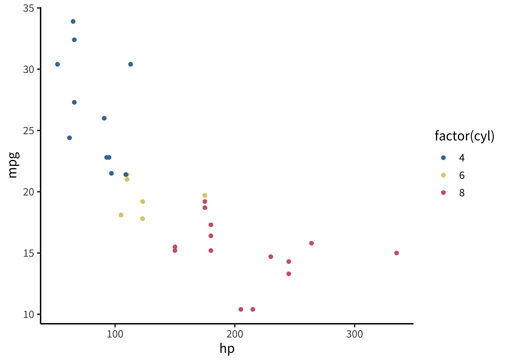

Explain what Markdown is and how the syntax works,
Practice how to integrate code and data in R Markdown,
Understand the different output formats from R Markdown and how to generate them
Know about generating APA format files with papaja and bibtex
This is a short tutorial on using R Markdown to mix prose and code together for creating reproducible scientific documents.1
1 This appendix is adapted from a tutorial that Mike Frank and Chris Hartgerink taught together at SIPS 2017.
2 If you’re interested in the source code for this tutorial, it’s available here. We use the amazing bookdown package to format multi-chapter manuscripts, and we use the tufte package (lightly customized) for style.
In short: R Markdown allows you to create documents that are compiled with code, producing your next scientific paper. This tutorial will help you learn the nuts and bolts of how to do this. This appendix—actually this whole book—is written in R Markdown. It’s a very flexible platform for writing nice looking documents.2
C.1 Getting Started
Fire up Rstudio and create a new R Markdown file. Don’t worry about the settings, we’ll get to that later.
If you click on “Knit” (or hit CTRL+SHIFT+K) the R Markdown file will run and generate all results and present you with a PDF file, HTML file, or a Word file. If RStudio requests you to install packages, click yes and see whether everything works to begin with.
We need that before we teach you more about R Markdown. But you should feel good if you get here already, because honestly, you’re about 80% of the way to being able to write basic R Markdown files. It’s that easy.
exercises
Knit the R Markdown template to Word and PDF to ensure that you can get this to work. Isn’t it gratifying?
C.2 Structure of an R Markdown file
An R Markdown file contains several parts. Most essential are the header, the body text, and code chunks. When you knit the resulting document, you will get the output—text combined with the results of running the core—in one of a number of output formats.
C.2.1 Header
Headers in R Markdown files contain some metadata about your document, which you can customize to your liking. Below is a simple example that purely states the title, author name(s), date, and output format.3
3 The header is written in “YAML”, which means “yet another markup language.” You don’t need to know that, and don’t worry about it. Just make sure you are careful with indenting, as YAML does care about that.
The body of the document is where you actually write your reports. This is primarily written in the Markdown format, which is explained in the Markdown syntax section.
The beauty of R Markdown is, however, that you can evaluate R code right in the text. To do this, you start inline code with `r, type the code you want to run, and close it again with a `. Usually, this key is below the escape (ESC) key or next to the left SHIFT button.
For example, if you want to have the result of 48 times 35 in your text, you type ` r 48-35`, which returns 13. Please note that if you return a value with many decimals, it will also print these depending on your settings (for example, 3.1415927).
C.2.3 Code chunks
In the section above we introduced you to running code inside text, but often you need to take several steps in order to get to the result you need. And you don’t want to do data cleaning in the text! This is why there are code chunks. A simple example is a code chunk loading packages.
First, insert a code chunk by going to Code->Insert code chunk or by pressing CTRL+ALT+I. Inside this code chunk you can then type for example, library(ggplot2) and create an object x.
If you do not want to have the contents of the code chunk to be put into your document, you include echo=FALSE at the start of the code chunk. We can now use the contents from the above code chunk to print results (e.g., \(x=2\)).
These code chunks can contain whatever you need, including tables, and figures (which we will go into more later). Note that all code chunks regard the location of the R Markdown as the working directory, so when you try to read in data use the relative path in.
C.2.4 Output formats
By default, R Markdown renders to HTML format, the standard format of web pages. These output files are visible in the RStudio viewer and in any web-browser. These files can be shared on the web and are a great way to provide the outputs of your research to collaborators (e.g., sharing intermediate analytic results).
Through a program called pandoc, R Markdown can also render to Microsoft Word’s DOCX format. This functionality can be very useful for sharing editable writeups with collaborators (see below).
Finally, rendering to PDF is useful If you want to create PDFs from R Markdown you need a installation on your computer. (Latex, or tex for short, is a powerful typesetting package). Many tex installations are available. One recent possibility is TinyTEX, a minimal tex installaction made for working with R Markdown. Or if you want a full install, try MikTeX for Windows, MacTeX for Mac, or TeX Live for Linux.
C.3 Markdown syntax
Markdown is one of the simplest document languages around, that is an open standard and can be converted into .tex, .docx, .html, .pdf, etc. This is the main workhorse of R Markdown and is very powerful. You can learn Markdown in five minutes. Other resources include this tutorial, and this cheat sheet.
These are the basics:
It’s easy to get *italic* or **bold**.
You can get headings using # heading1 for first level, ## heading2 for second-level, and ### heading3 for third level. Make sure you leave a space after the #!
Lists are delimited with * for each entry.
You can write links by writing [here's my link](http://foo.com).
The great thing about Markdown is that it works almost everywhere! Github, OSF, slack, many wikis, and even in text documents it looks pretty good.
C.4 Headers, graphs, and tables
C.4.1 Headers
We’re going to want more libraries loaded (for now we’re loading them inline).
library(knitr)library(ggplot2)library(broom)
We often also add chunk options to each code chunk so that, for example:
code does or doesn’t display inline (echo setting)
figures are shown at various sizes (fig.width and fig.height settings)
warnings and messages are suppressed (warning and message settings)
computations are cached (cache setting)
There are many others available as well. Caching can be very helpful for large files, but can also cause problems when there are external dependencies that change. An example that is useful for manuscripts is:
Outlining using headings is a really great way to keep things organized! Try making a bunch of headings, and then recompiling your document.
To show off your headings from the previous exercise, add a table of contents. Go to the header of the document (the YAML), and add some options to the html document bit. You want it to look like this (indentation must to be correct):
output:html_document:toc:true
C.4.2 Graphs
It’s really easy to include graphs, like this one. (Using the mtcars dataset that comes with ggplot2).

All you have to do is make the plot and it will render straight into the text.
External graphics can also be included, as follows:
knitr::include_graphics("path/to/file")
C.4.3 Tables
There are many ways to make good-looking tables using R Markdown, depending on your display purpose.
The knitr package (which powers R Markdown) comes with the kable function. It’s versatile and makes perfectly reasonable tables. It also has a digits argument for controlling rounding.
For HTML tables, there is the DT package, which provides datatable—these are pretty and interactive javascript-based tables that you can click on and search in. Not great for static documents though.
For APA manuscripts, it can also be helpful to use the xtable package, which creates very flexible LaTeX tables. These can be tricky to get right but they are completely customizable provided you want to google around and learn a bit about tex.
We recommend starting with kable. An expression like this:
kable(head(mtcars), digits =1)
Produces tabular output like this:
mpg
cyl
disp
hp
drat
wt
qsec
vs
am
gear
carb
Mazda RX4
21.0
6
160
110
3.9
2.6
16.5
0
1
4
4
Mazda RX4 Wag
21.0
6
160
110
3.9
2.9
17.0
0
1
4
4
Datsun 710
22.8
4
108
93
3.9
2.3
18.6
1
1
4
1
Hornet 4 Drive
21.4
6
258
110
3.1
3.2
19.4
1
0
3
1
Hornet Sportabout
18.7
8
360
175
3.1
3.4
17.0
0
0
3
2
Valiant
18.1
6
225
105
2.8
3.5
20.2
1
0
3
1
exercises
Using the mtcars dataset, insert a table and a graph of your choice into your R Markdown template document. If you’re feeling uninspired, try hist(mtcars$mpg).
C.4.4 Statistics
It’s also really easy to include statistical tests of various types. One option is to use the broom package, which formats the outputs of various tests really nicely. Paired with knitr’s kable you can make very simple tables in just a few lines of code. This expression:
mod <-lm(mpg ~ hp + cyl, data = mtcars)kable(tidy(mod), digits =3)
produces this output:
term
estimate
std.error
statistic
p.value
(Intercept)
36.908
2.191
16.847
0.000
hp
-0.019
0.015
-1.275
0.213
cyl
-2.265
0.576
-3.933
0.000
Cleaning these tables up for publication can take some work. For example, we’d need to rename a bunch of fields to make this table have the labels we wanted (e.g., to turn hp into Horsepower).
We often need APA-formatted statistics to be printed in text, though. A good approach is to compute them first, and then print them inline. First, we’d run something like this:
ts <-with(mtcars,t.test(hp[cyl==4], hp[cyl==6]))
Then we’d print this:
There’s a statistically-significant difference in horsepower for 4- and 6-cylinder cars (\(t(11.49) = -3.56\), \(p = 0.004\)).
We did this via an inline code block: round(ts$parameter, 2).4
4 APA would require omission of the leading zero. papaja::printp() will let you do that, see below.
Rounding \(p\) values can occasionally get you in trouble. It’s very easy to have an output of \(p = 0\) when in fact \(p\) can never be exactly equal to 0. Nonetheless, this can help you prevent the kinds of rounding errors that would get picked up by software like statcheck.
C.5 Writing APA-format papers
The end-game of reproducible research is to knit your entire paper into a submittable APA-style writeup. Managing APA format is a pain in the best of times. The papaja package allows you to circumvent this task by rendering your manuscript directly from R Markdown.5
5 Thanks to Frederick Aust for contributing much of the code in this section! For a bit more on papaja, check out this guide.
papaja has not yet been released on CRAN but you can install it from GitHub.
# Install devtools package if necessaryif(!"devtools"%in%rownames(installed.packages())) install.packages("devtools")# Install papajadevtools::install_github("crsh/papaja")
The APA manuscript template should now be available through the RStudio menus when creating a new R Markdown file.
When you click RStudio’s Knit button papaja, rmarkdown, and knitr work together to create an APA conform manuscript that includes both your manuscript text and the results of any embedded R code.
exercises
Make sure you’ve got papaja, then open a new APA template file. Compile this document, and look at how awesome it is. Try pasting in your figure and table from your other R Markdown (don’t forget any libraries you need to make it compile).
C.6 Bibiographic management
Managing a bibliography by hand is a lot of work. Letting software do this for you is much easier. In R Markdown it’s possible to include references using bibtex, by using @ref syntax. You can do this in papaja but it’s also possible to o it in other packages that have some kind of bibliographic handling.
It’s simple. You put together a set of paper citations in a bibtex file—then when you refer to them in text, the citations pop up formatted correctly, and they are also put in your bibliography. As an example, @nuijten2016 results in the in text citation “Nuijten et al. (2016)”, or cite them parenthetically with [@nuijten2016](Nuijten et al. 2016). Take a look at the papaja APA example to see how this works.
How do you make your bibtex file? You can do it by hand but this is a pain. One option for managing references is bibdesk, which integrates with google scholar.6citr is an R package that provides an easy-to-use RStudio addin that facilitates inserting citations. The addin will automatically look up the Bib(La)TeX-file(s) specified in the YAML front matter. The references for the inserted citations are automatically added to the documents reference section. Once citr is installed (install.packages("citr")) and you have restarted your R session, the addin appears in the menus and you can define a keyboard shortcut to call the addin.
6 Many other options are possible. For example, some of us use Zotero frequently as well.
C.7 Collaboration
How do we collaborate using R Markdown? There are lots of different workflows that people use. Here are a few:
The lead author makes a github repository with the markdown-formatted document in it. Others read the PDF and send text comments or PDF annotations and the lead makes modifications accordingly.7 This workflow works well when the lead author is relatively experienced and wants to keep control of the manuscript without too much line-by-line rewriting.
The lead author makes a repository as above, but co-authors collaborate either by pushing changes to master or by creating pull requests. This workflow works well when the authors are all fairly git-savvy, and can be great for quickly writing different parts in parallel because of git’s automatic merging.8
The authors work collaboratively together in an editor like Google Docs, Word, or Overleaf. (We favor cloud platforms rather than emailing back and forth, for all the reasons discussed in chapter 13). Once the substantive text sections have converged, the lead author puts that text back into the markdown document and adds references. This workflow is good for very collaborative introduction writing when co-authors don’t use git or markdown. This workflow is a little clunky, but not too bad. And critically, all the figures and numbers get rendered fresh when you re-knit, so nothing can get accidentally altered during the editing process.
The lead author renders the results section from markdown, then writes text in the resulting Word document (or uploads it to Google Docs). This workflow is closest to the “old way” that many people are used to, but runs the biggest risk of errors getting introduced and propagated forward, since it’s not possible to rerender the whole document from scratch. If someone makes changes to the results section, it’s critical to propagate these back to the markdown and keep the two in sync.
7 Dropbox has good PDF annotation tools for writing comments on specific lines of text.
8 We wrote this book using the all-github workflow, and it was pretty good, modulo some merge conflicts.
In sum, there are lots of ways to collaborate—the best thing is to talk with your co-authors to select one that works for the group.
C.8 R Markdown: Chapter summary
R Markdown is a great way to write reproducible papers. It is not too tricky to learn, and once you master it you can save time by reformatting quickly and automatically, managing your bibliography automatically, and even creating nice web-compatible documents.
References
Nuijten, Michèle B, Chris H J Hartgerink, Marcel A L M van Assen, Sacha Epskamp, and Jelte M Wicherts. 2016. “The Prevalence of Statistical Reporting Errors in Psychology (1985–2013).”Behavior Research Methods 48 (4): 1205–26.